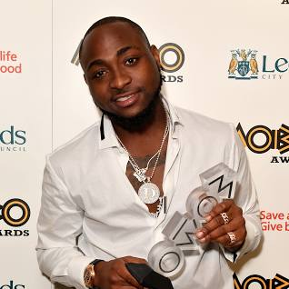
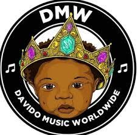
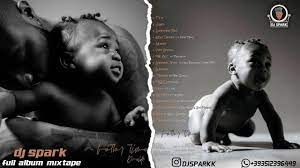

David Adedeji Adeleke, who is better known as Davido, is an American-born Nigerian singer (born November 21, 1992), songwriter, and record producer. Davido was born in Atlanta, US, and raised in Lagos; he made his music debut as a member of the music group KB International. His 2011 single “Dami Duro” was well-received throughout Nigeria. Along with his elder brother Adewale Adeleke, Davido is the co-owner of HKN Music (a record label home to Sina Rambo, B.Red, and DeeKay) which he later left to form his own record label DMW.

Nigerian vocalist/producer Davido blends traditional African elements with global mainstream pop for a sound that's equal parts intriguing and infectious. He quickly grew from club-ready early songs to charting tracks and features from big names like Nicki Minaj and Chris Brown on his 2020 album A Better Time, which cracked the Billboard 200. His fourth LP, 2023's Timeless, continued his successful run and featured star guests like Angélique Kidjo and Skepta. Davido was born David Adedeji Adeleke in Atlanta, Georgia, in 1992. His interest in music began while attending Oakwood University in his late teens, and he started making his own beats and investigating music production. He dropped out of school and began pursuing music full-time, relocating to Lagos, Nigeria, and releasing his debut single, "Back When," in 2011. The single received some attention for its mix of clubby production, high-energy vocals, and Afro-pop rhythms, and was followed shortly by second single "Dami Duro." Work began on his debut album, Omo Baba Olowo, which was released in 2012 and produced a plethora of singles.A Good Time Success came quickly for Davido, and he sated his fans with a string of new tracks released over the next several years while he was working on his follow-up LP, The Baddest, which was still unreleased as of 2023. Between 2013 and 2017, singles like "Gobe," "Aye," and "Pere" (among many others) piled up, sometimes featuring collaborations with bigger-name rappers like Meek Mill or Young Thug. Between albums, Davido also inked a deal with RCA. More stand-alone tracks followed until 2019, when second album A Good Time arrived, featuring guest appearances from A Boogie wit da Hoodie, Peruzzi, Popcaan, Chris Brown, Summer Walker, Gunna, and other stars from around the world, and did well both commercially and with critics. Davido quickly followed the next year with his third effort, A Better Time. The album was a similarly star-studded affair, with guest spots from Nicki Minaj, Lil Baby, Sauti Sol, and many others on Davido's bright and catchy R&B-infused Afro-pop. A Better Time also fared well commercially, peaking at number four on Billboard's World Albums chart and breaking into the pop charts as well. Late the following year, Davido used to his celebrity status to launch an online fundraising campaign to support Nigerian orphanages. He was also in the midst of recording his fourth album, a sprawling 17-track affair that mixed amapiano with myriad other styles from highlife to konto and ragga. When it was released in March 2023, Timeless featured Davido's now-customary guest list of stars with features from Angélique Kidjo, Skepta, Asake, Focalistic, and others.
Davido currently has 4 albums with Timeless and A better time at peak of most world chart
